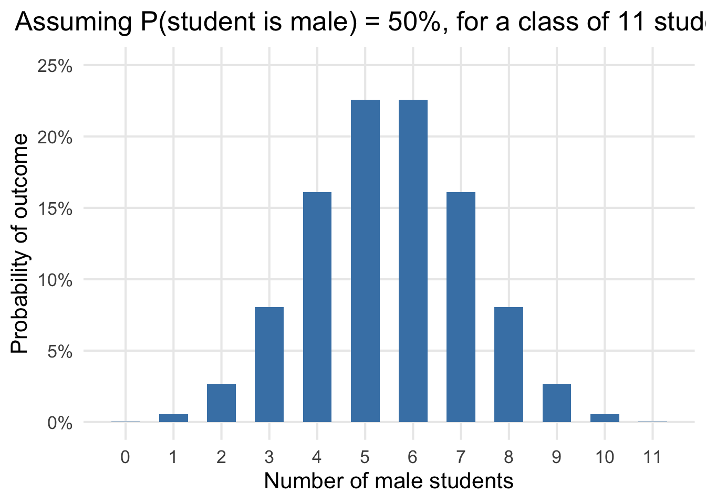
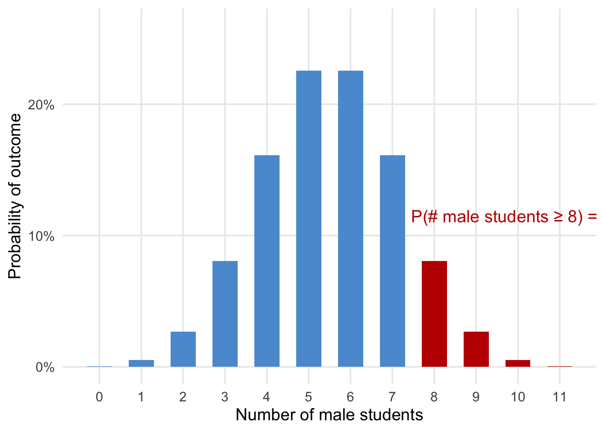

# Create data for the binomial distributiondf <-tibble(male_students =0:11,probability =dbinom(male_students, size =11, prob =0.5))# Plotggplot(df, aes(x = male_students, y = probability)) +geom_col(fill ="steelblue", width =0.6) +scale_y_continuous(labels = scales::percent_format(accuracy =1),limits =c(0, 0.25) ) +scale_x_continuous(breaks =0:11) +labs(title ="Assuming P(student is male) = 50%, for a class of 11 students:",x ="Number of male students",y ="Probability of outcome" ) +theme_minimal(base_size =16) +theme(plot.title =element_text(hjust =0.5),panel.grid.minor =element_blank() )

A statistical test
# Parametersn <-11p <-0.5# Create probability distributiondf <-tibble(male_students =0:n,prob =dbinom(male_students, size = n, prob = p)) %>%mutate(highlight = male_students >=8 )# Compute tail probabilitytail_prob <-sum(df$prob[df$male_students >=8])# Plotggplot(df, aes(x = male_students, y = prob, fill = highlight)) +geom_col(width =0.6) +scale_fill_manual(values =c("FALSE"="#5b9bd5", "TRUE"="#c00000"),guide ="none" ) +scale_y_continuous(labels = scales::percent_format(accuracy =1),limits =c(0, 0.26) ) +scale_x_continuous(breaks =0:11) +labs(x ="Number of male students",y ="Probability of outcome" ) +annotate("text",x =8.6,y =0.115,label =paste0("P(# male students ≥ 8) = ", scales::percent(tail_prob, accuracy =0.1) ),color ="#c00000",size =5,hjust =0.2 ) +theme_minimal(base_size =14) +theme(panel.grid.minor =element_blank() )

The same test, but in R
binom.test(c(8,3), p =0.5, alternative="greater")
Exact binomial test
data: c(8, 3)
number of successes = 8, number of trials = 11, p-value = 0.1133
alternative hypothesis: true probability of success is greater than 0.5
95 percent confidence interval:
0.4356258 1.0000000
sample estimates:
probability of success
0.7272727
By the end of this course…
You will be able to test:
Theories involving one categorical or continuous variable.
Ex: gender is often measured as a categorical variable (male / female / other)
Ex: income is often measured as a continuous variable (the number of dollars one earns is a real number)
Theories involving how one (or more) binary or continuous variable affects another binary or continuous variable.
Questions?
Course Expectations
Active learning - Lecture is for you so interrupt to ask questions if you have them
Safe and productive learning space for researchers using these methods and supporting each other
Expose you to a lot of coding and technical things but we can do it together
We’re only learning the basics and that’s all I expect from you
Coding in R can be intimidating, but promise it’s worth learning how use
Positron is cutting edge IDE (most of grad students don’t use), but it’s the future of social science research
Hadley Wickham’s R for Data Science 2nd Edition (https://r4ds.hadley.nz), which is also free online.
We’ll read two journal articles to see how social scientists use regression analysis in practice.
Thompson, M.S., & Keith, V. M. (2001). The Blacker the Berry: Gender, Skin Tone, Self-Esteem, and Self-Efficacy. Gender & Society, 15(3), 336-357. (https://doi.org/10.1177/089124301015003002)
Freeman, L., & Braconi, F. (2004). Gentrification and Displacement New York City in the 1990s. Journal of the American Planning Association, 70(1), 39–52. (https://doi.org/10.1080/01944360408976337)
Open week
Open week at the end to fill it with something useful to you all.
Some options:
brief intro to machine learning
survey of more advanced methods (e.g., fixed effects, MLM, spatial regression, Poisson/Negative Binomial, etc.)
Positron (https://positron.posit.co/download.html), a free program that makes working in R much easier and is at the cutting edge of data science right now.
We’ll start installation of R and Positron at the end of class–this must be done by class next week
Course Elements
Attendance and participation (10%)
Weekly homework assignments (30%)
Research paper (40%)
Final exam (20%)
Class Format
First half of class (give or take) will be a lecture where I go over new statistical concepts and show you how to implement these statistical concepts in R
Second half of class, either you will have time:
to start hw assignments that practice implementing these concepts in R
we’ll have extra time for questions/followups
we’ll discuss the research papers a bit more in-depth
Typical Weekly Assignment
From 3-10 problems with brief analysis and write-up in R and quarto
Show your work – explain conclusions and interpret results as necessary
Work with your own dataset (with some exceptions) and apply methods
Use same dataset each week -> research paper
For the first assignment, I will provide a dataset on bCourses
Think carefully about the method, types of questions it can answer, types of variables that can be used before choosing variables from your dataset
Submit answers using Quarto (.qmd) template provided on bCourses to submit to bCourse
Grading:
0 = not turned in
1 = below expectations
2 = meets expectations
Research Paper
Develop and present a research question of your choice, address it using statistical techniques from the course that you apply to data in R, and write a paper summarizing your findings
You can (and should) use your weekly assignments to work on your research question
Several milestones throughout the semester (40%)
Paper proposal (5%)
Annotated bibliography (5%)
Revised paper proposal with outline (5%)
In-class presentation (5%) – 7-10 mins
Final paper (20%)
Keys to Success
Material is cumulative, so it is critical to keep up
Please ask questions during lecture!
If you find yourself falling behind, seek help immediately from me during office hours
Learning statistics requires thinking through how to solve problems
This is what the weekly assignments are for; you should not expect to fully understand the material until after you have completed the assignment
Feel free to work on assignments in groups, though what you turn in must be your own work.
Keys to Success
Learning statistics is like learning a language
The material in this course can be challenging / counterintuitive if you haven’t seen it before
It is important not to be intimidated by new terms or the use of letters to represent quantities or variables
Review your algebra skills if necessary
Lecture slides will be made available, but are not a substitute for careful note taking
Office Hours
I can help in office hours with questions about concepts from lecture or about coding in R
Tuesdays, 11:30 AM-1:00 PM, 444 Social Science Building
Tuesdays, 4:00 PM-4:30 PM, 444 Social Science Building
Mac users need to check whether they have a Apple Silicon (M1/M2) or Intel processor and download the appropriate version of R for Mac:
1. Click the Apple menu () in the top-left corner of your screen.
2. Select About This Mac.
3. Look at the Processor or Chip line:
- If it says Apple M1, M2, or similar → you have Apple Silicon.
- If it says Intel Core i5, i7, etc. → you have an Intel Mac.↩︎
You can just download the “Universal” option, but know it is slightly larger file and might not be quite as optimized.↩︎